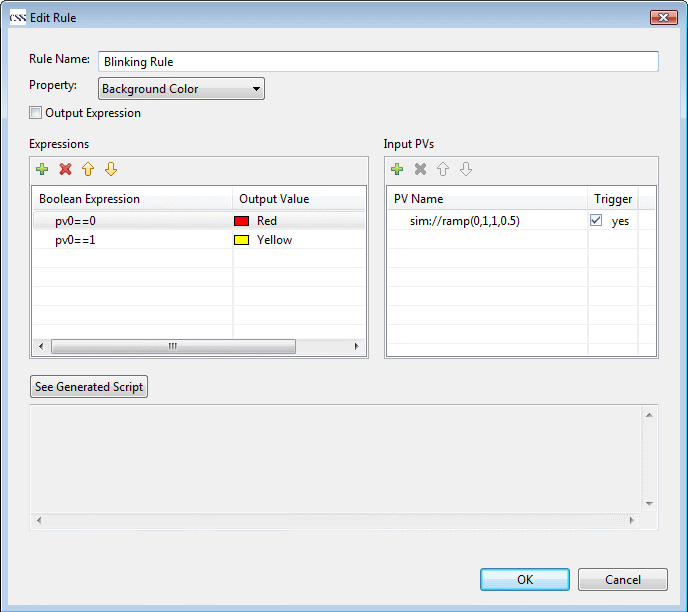
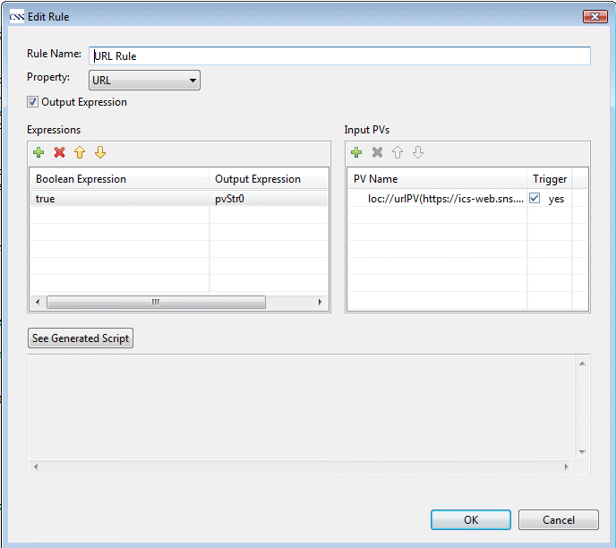

Rule
To obtain customized dynamic hehaviors than just setting from properties sheet, you can attach rules or scripts to widgets or OPI.
With rules, you can make widget properties dynamically changeable without any programming.
Widget property value will change along with the boolean expression status or input PV value.
The execution of a rule is triggered by its input PV(s), so at least one trigger PV is needed for a rule.
To have more complex dynamic behaviors if rules cannot achieve, you will need to attach scripts to the widget or OPI.
Diffrent with script, rules is part of the OPI file, so no additional file is needed.
Steps to attach rules to a widget:
- Select Rules property in property sheet view. You will see "Attache Rules" dialog.

- In Attach Rules Dialog, you can add more than one rule. When you add a rule or double click a rule, a rule edit dialog
will pop out. In which,
- Rule Name: the name of the rule.
- Property: the property which will be dynamically changed. Only simple property types are supported by now:
Boolean Property,Double Property, Integer Property, Combo Property, String Property, File Path Property, Color Property
and Font Property.
- Output Expression: If this is not selected, the output value will be constant value as set in Expression table.
If it is selected, the output value will be an expression (will be explained later).
- Boolean Expression: the condition expression, the property will be set to the corresponding output value when it is true (will be explained later).
- Input PVs: the input PVs for the rule. If trigger is true, value change of the PV will trigger the execution of the rule.
- See Generated Script: A rule is actually a simple script attached to the widget. Press this button, you can see the
equivalent script to the rule.

Boolean Expression
The Boolean Expression is javascript boolean expression, so all javascript operators are applicable here. Besides, all input PVs of the rule
are also accessible in the expression.
- Get double value:
pv{index}. For example: pv0 > pv1
- Get Long Integer value:
pvInt{index}. For example: pvInt0 == 5
- Get String value:
pvStr{index}. For example: pvStr0 == "apple"
- Get Severity:
pvSev{index}. It is an integer value, in which: 0: OK; -1: Invalid; 1: Major; 2:Minor.
For example: pvSev0 == 1 || pvSev0 ==2
Output Expression
Besides outputing a constant value to the property based on the boolean expression value, you can also output an expression value to
the property. For example, if you want make the String value of a PV as the URL of a web browser widget, you can set the output expression
to pvStr0. If you want to skip the boolean expression, simply set boolean expression to true.
